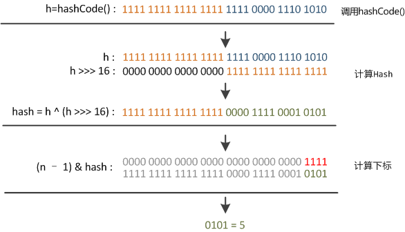
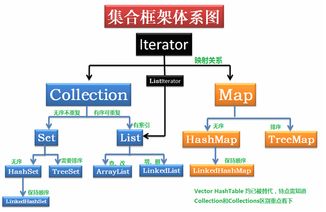
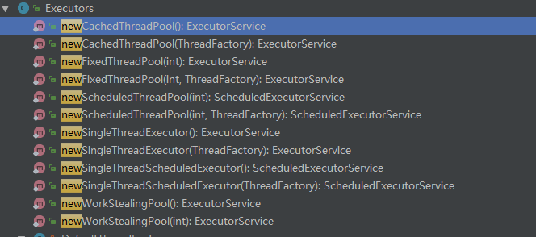
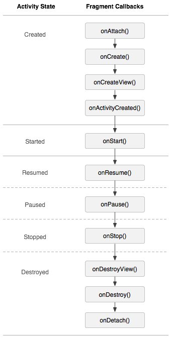
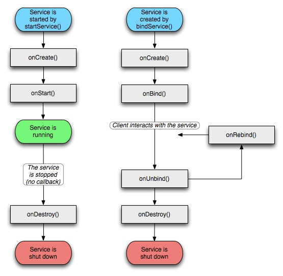
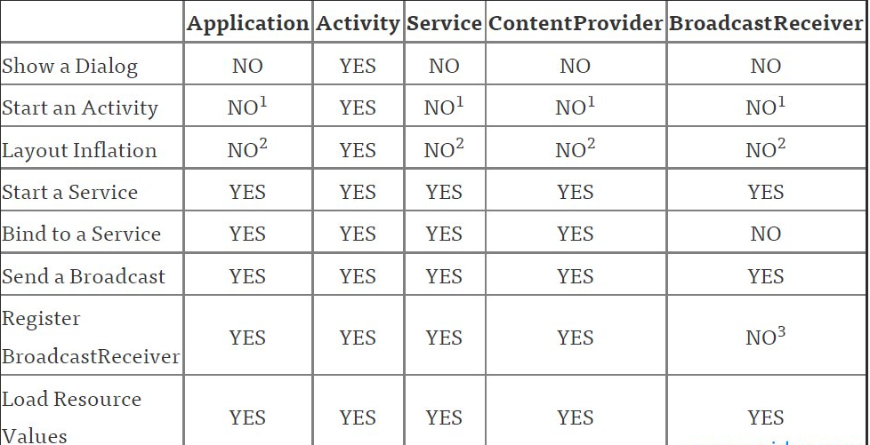

进程和线程的区别
根本区别：进程是操作系统资源分配的基本单位，而线程是任务调度和执行的基本单位
在开销方面：每个进程都有独立的代码和数据空间（程序上下文），程序之间的切换会有较大的开销；线程可以看做轻量级的进程，同一类线程共享代码和数据空间，每个线程都有自己独立的运行栈和程序计数器（PC），线程之间切换的开销小。
所处环境：在操作系统中能同时运行多个进程（程序）；而在同一个进程（程序）中有多个线程同时执行（通过CPU调度，在每个时间片中只有一个线程执行）
内存分配方面：系统在运行的时候会为每个进程分配不同的内存空间；而对线程而言，除了CPU外，系统不会为线程分配内存（线程所使用的资源来自其所属进程的资源），线程组之间只能共享资源。
包含关系：没有线程的进程可以看做是单线程的，如果一个进程内有多个线程，则执行过程不是一条线的，而是多条线（线程）共同完成的；线程是进程的一部分，所以线程也被称为轻权进程或者轻量级进程。
哪些情况下的对象会被垃圾回收机制处理掉？
没有引用指向
只有弱引用指向并且不回收弱引用对象的话存储区无空间
虚引用指向的对象
异常体系 Thorwable类（表示可抛出）是所有异常和错误的超类，两个直接子类为Error和Exception，分别表示错误和异常。
Error与Exception
Error是程序无法处理的错误，它是由JVM产生和抛出的，比如OutOfMemoryError、ThreadDeath等。这些异常发生时，Java虚拟机（JVM）一般会选择线程终止。
Exception是程序本身可以处理的异常，这种异常分两大类运行时异常和非运行时异常。程序中应当尽可能去处理这些异常。
运行时异常和非运行时异常
运行时异常都是RuntimeException类及其子类异常，如NullPointerException、IndexOutOfBoundsException等，这些异常是不检查异常，程序中可以选择捕获处理，也可以不处理。这些异常一般是由程序逻辑错误引起的，程序应该从逻辑角度尽可能避免这类异常的发生。
非运行时异常是RuntimeException以外的异常，类型上都属于Exception类及其子类。从程序语法角度讲是必须进行处理的异常，如果不处理，程序就不能编译通过。如IOException、SQLException等以及用户自定义的Exception异常，一般情况下不自定义检查异常。
集合专题 String、StringBuffer、StringBuilder区别
StringBuilder通过append看是线程不安全的
通过
1 2 3 4 5 6 7 8 9 10 11 12 13 14 15 16 17 18 19 public final class StringBuilder extends AbstractStringBuilder implements java .io .Serializable , CharSequence { public StringBuilder () super (16 ); } public StringBuilder (String str) super (str.length() + 16 ); append(str); } @Override public StringBuilder append (String str) super .append(str); return this ; } }
AbstractStringBuilder.append()
1 2 3 4 5 6 7 8 9 10 public AbstractStringBuilder append (String str) if (str == null ) return appendNull(); int len = str.length(); ensureCapacityInternal(count + len); str.getChars(0 , len, value, count); count += len; return this ; }
扩容规则：
1 2 3 4 5 6 7 8 9 10 11 private int newCapacity (int minCapacity) int newCapacity = (value.length << 1 ) + 2 ; if (newCapacity - minCapacity < 0 ) { newCapacity = minCapacity; } return (newCapacity <= 0 || MAX_ARRAY_SIZE - newCapacity < 0 ) ? hugeCapacity(minCapacity) : newCapacity; }
StrungBuffer
1 2 3 4 5 6 7 8 9 10 11 12 13 14 15 16 17 18 19 20 21 22 23 24 25 26 public final class StringBuffer extends AbstractStringBuilder implements java .io .Serializable , CharSequence public StringBuffer () super (16 ); } @Override public synchronized StringBuffer append (String str) toStringCache = null ; super .append(str); return this ; } public AbstractStringBuilder append (String str) if (str == null ) return appendNull(); int len = str.length(); ensureCapacityInternal(count + len); str.getChars(0 , len, value, count); count += len; return this ; } }
1 2 3 4 5 6 7 private void ensureCapacityInternal (int minimumCapacity) if (minimumCapacity - value.length > 0 ) { value = Arrays.copyOf(value, newCapacity(minimumCapacity)); } }
小结：
StringBuffer线程安全，但是影响效率的原因有两个
StringBuilder线程不安全，但是效率最高适合不断调用，单线程情况下，就算是给append方法加锁也比StringBuffer快
String不可继承，其中intern方法是native方法给常量池中入
并发List Vector和CopyOnWriteArrayList是两个线程安全的List，Vector读写操作都用了同步，相对来说更适用于写多读少的场合，CopyOnWriteArrayList在写的时候会复制一个副本，对副本写，写完用副本替换原值，读的时候不需要同步，适用于写少读多的场合。
1 2 3 4 5 6 7 8 9 10 11 12 13 14 15 16 17 18 19 20 21 22 23 24 25 26 27 28 29 30 31 32 33 34 35 36 37 38 public class Vector <E > extends AbstractList <E > implements List <E >, RandomAccess , Cloneable , java .io .Serializable public Vector () this (10 ); } public Vector (int initialCapacity) this (initialCapacity, 0 ); } public Vector (int initialCapacity, int capacityIncrement) super (); if (initialCapacity < 0 ) throw new IllegalArgumentException("Illegal Capacity: " + initialCapacity); this .elementData = new Object[initialCapacity]; this .capacityIncrement = capacityIncrement; } public synchronized E get (int index) if (index >= elementCount) throw new ArrayIndexOutOfBoundsException(index); return elementData(index); } @SuppressWarnings ("unchecked" ) E elementData (int index) { return (E) elementData[index]; } public synchronized boolean add (E e) modCount++; ensureCapacityHelper(elementCount + 1 ); elementData[elementCount++] = e; return true ; } }
1 2 3 4 5 6 7 8 9 10 11 12 13 14 15 16 17 18 19 20 private void ensureCapacityHelper (int minCapacity) if (minCapacity - elementData.length > 0 ) grow(minCapacity); } private static final int MAX_ARRAY_SIZE = Integer.MAX_VALUE - 8 ;private void grow (int minCapacity) int oldCapacity = elementData.length; int newCapacity = oldCapacity + ((capacityIncrement > 0 ) ? capacityIncrement : oldCapacity); if (newCapacity - minCapacity < 0 ) newCapacity = minCapacity; if (newCapacity - MAX_ARRAY_SIZE > 0 ) newCapacity = hugeCapacity(minCapacity); elementData = Arrays.copyOf(elementData, newCapacity); }
1 2 3 4 5 6 7 8 9 10 11 12 13 14 15 16 17 18 19 20 21 22 23 24 25 26 27 28 29 30 31 32 33 34 35 36 37 38 public class CopyOnWriteArrayList <E > implements List <E >, RandomAccess , Cloneable , java .io .Serializable { public CopyOnWriteArrayList () setArray(new Object[0 ]); } final void setArray (Object[] a) array = a; } public E get (int index) return get(getArray(), index); } @SuppressWarnings ("unchecked" ) private E get (Object[] a, int index) return (E) a[index]; } final transient ReentrantLock lock = new ReentrantLock(); public boolean add (E e) final ReentrantLock lock = this .lock; lock.lock(); try { Object[] elements = getArray(); int len = elements.length; Object[] newElements = Arrays.copyOf(elements, len + 1 ); newElements[len] = e; setArray(newElements); return true ; } finally { lock.unlock(); } } }
可见写的时候相对效率就比较低了，但是加锁了保证多线程访问的安全性。但是明显写入的时候效率其实并不比Vector高。
并发Set CopyOnWriteArraySet基于CopyOnWriteArrayList来实现的，只是在不允许存在重复的对象这个特性上遍历处理了一下。
1 2 3 4 5 6 7 8 9 10 public class CopyOnWriteArraySet <E > extends AbstractSet <E > implements java .io .Serializable { public CopyOnWriteArraySet () al = new CopyOnWriteArrayList<E>(); } public boolean add (E e) return al.addIfAbsent(e); } }
1 2 3 4 5 6 7 8 9 10 11 12 13 14 15 16 17 18 19 20 21 22 23 24 25 26 27 28 29 30 31 32 public boolean addIfAbsent (E e) Object[] snapshot = getArray(); return indexOf(e, snapshot, 0 , snapshot.length) >= 0 ? false : addIfAbsent(e, snapshot); } private boolean addIfAbsent (E e, Object[] snapshot) final ReentrantLock lock = this .lock; lock.lock(); try { Object[] current = getArray(); int len = current.length; if (snapshot != current) { int common = Math.min(snapshot.length, len); for (int i = 0 ; i < common; i++) if (current[i] != snapshot[i] && eq(e, current[i])) return false ; if (indexOf(e, current, common, len) >= 0 ) return false ; } Object[] newElements = Arrays.copyOf(current, len + 1 ); newElements[len] = e; setArray(newElements); return true ; } finally { lock.unlock(); } }
可见操作就是内部对CopyOnWriteArrayList进行操作
并发Map ConcurrentHashMap是专用于高并发的Map实现，内部实现进行了锁分离，get操作是无锁的。
1 2 3 4 5 6 7 8 9 10 11 12 13 14 15 16 17 18 19 20 21 22 23 24 25 26 27 28 29 30 31 32 33 34 35 36 37 38 39 40 41 42 43 44 45 46 47 48 49 50 51 52 53 54 55 56 57 58 59 60 61 62 63 64 65 66 67 68 69 70 71 72 73 74 75 76 77 78 79 80 81 82 83 84 85 86 87 88 89 90 91 public class ConcurrentHashMap <K ,V > extends AbstractMap <K ,V > implements ConcurrentMap <K ,V >, Serializable { public ConcurrentHashMap () } public V put (K key, V value) return putVal(key, value, false ); } final V putVal (K key, V value, boolean onlyIfAbsent) if (key == null || value == null ) throw new NullPointerException(); int hash = spread(key.hashCode()); int binCount = 0 ; for (Node<K,V>[] tab = table;;) { Node<K,V> f; int n, i, fh; if (tab == null || (n = tab.length) == 0 ) tab = initTable(); else if ((f = tabAt(tab, i = (n - 1 ) & hash)) == null ) { if (casTabAt(tab, i, null , new Node<K,V>(hash, key, value, null ))) break ; } else if ((fh = f.hash) == MOVED) tab = helpTransfer(tab, f); else { V oldVal = null ; synchronized (f) { if (tabAt(tab, i) == f) { if (fh >= 0 ) { binCount = 1 ; for (Node<K,V> e = f;; ++binCount) { K ek; if (e.hash == hash && ((ek = e.key) == key || (ek != null && key.equals(ek)))) { oldVal = e.val; if (!onlyIfAbsent) e.val = value; break ; } Node<K,V> pred = e; if ((e = e.next) == null ) { pred.next = new Node<K,V>(hash, key, value, null ); break ; } } } else if (f instanceof TreeBin) { Node<K,V> p; binCount = 2 ; if ((p = ((TreeBin<K,V>)f).putTreeVal(hash, key, value)) != null ) { oldVal = p.val; if (!onlyIfAbsent) p.val = value; } } } } if (binCount != 0 ) { if (binCount >= TREEIFY_THRESHOLD) treeifyBin(tab, i); if (oldVal != null ) return oldVal; break ; } } } addCount(1L , binCount); return null ; } }
扰动函数的分析
1 2 3 4 5 static final int spread (int h) return (h ^ (h >>> 16 )) & HASH_BITS; }
h是key.hashCode()得到的一个hash值返回int散列值。如果直接用来做下标访问的话，考虑到2进制32位带符号的范围大概是40亿左右。一般比较难碰撞。但是40亿内存很吃力，hashmap初始化的时候因子才16，所以这个值是不能用来作为下标的。用的时候得进行取模运算。取模运算比较好的办法就是x&(length-1)条件是length-1必须是2的整数次幂这样就保证了高位是0，低位全部是1。
1 2 3 4 5 6 7 8 9 10 11 12 13 14 15 16 length-1 0000 0001 0000 0011 0000 0111 0000 1111 0001 1111 0011 1111 0111 1111 1111 1111 当有一个值的时候和上面的值进行&运算产生的结果都是去除长度的最高位，其余低位全部是1 ，也就是对于一个数来说 保证它在这个长度内的位有效。达到模的目的，比如： 7 %4 0111 & 0011 保留了低2 位
不过这里虽然解决了hash值能在数组中可用的找到下标问题，但是碰撞依旧存在，怎么优化碰撞问题就是扰动函数的体现。

h ^ (h >>> 16)异或了低16位混合原始哈希码的高位和低位，以此来加大低位的随机性 。
并发的Queue 在并发队列上JDK提供了两套实现，一个是以ConcurrentLinkedQueue为代表的高性能队列，一个是以BlockingQueue接口为代表的阻塞队列。ConcurrentLinkedQueue适用于高并发场景下的队列，通过无锁的方式实现，通常ConcurrentLinkedQueue的性能要优于BlockingQueue。BlockingQueue的典型应用场景是生产者-消费者模式中，如果生产快于消费，生产队列装满时会阻塞，等待消费。

从集合安全角度看：
LinkedList、ArrayList、HashSet是非线程安全的，Vector是线程安全的;
HashMap是非线程安全的，HashTable是线程安全的;
StringBuilder是非线程安全的，StringBuffer是线程安全的。
集合Set实现Hash怎么防止碰撞
hashset
1 2 3 4 5 6 7 8 9 10 11 12 13 14 15 16 17 18 19 20 21 22 23 24 private transient HashMap<E,Object> map;private static final Object PRESENT = new Object();public HashSet () map = new HashMap<>(); } public boolean add (E e) return map.put(e, PRESENT)==null ; }
所以关键点在于key
线程专题 join介绍：
现在有T1、T2、T3三个线程，你怎样保证T2在T1执行完后执行，T3在T2执行完后执行？
join() 定义在Thread.java中。
1 2 3 4 5 6 7 8 9 10 11 12 13 14 15 public class Father extends Thread public void run () Son s = new Son(); s.start(); s.join(); ... } } public class Son extends Thread public void run () ... } }
上面的有两个类Father(主线程类)和Son(子线程类)。因为Son是在Father中创建并启动的，所以，Father是主线程类，Son是子线程类。
看源码说明：
1 2 3 4 5 6 7 8 9 10 11 12 13 14 15 16 17 18 19 20 21 22 23 24 25 26 27 28 29 public final void join () throws InterruptedException join(0 ); } public final synchronized void join (long millis) throws InterruptedException long base = System.currentTimeMillis(); long now = 0 ; if (millis < 0 ) { throw new IllegalArgumentException("timeout value is negative" ); } if (millis == 0 ) { while (isAlive()) { wait(0 ); } } else { while (isAlive()) { long delay = millis - now; if (delay <= 0 ) { break ; } wait(delay); now = System.currentTimeMillis() - base; } } }
Lock
在Java中Lock接口比synchronized块的优势是什么？你需要实现一个高效的缓存，它允许多个用户读，但只允许一个用户写，以此来保持它的完整性，你会怎样去实现它？
lock接口在多线程和并发编程中最大的优势是它们为读和写分别提供了锁，它能满足你写像ConcurrentHashMap这样的高性能数据结构和有条件的阻塞。
Lock出现的背景：
多线程情况下当一段代码被synchronized修饰同一时刻只能有一个线程访问，有两种情况才释放锁：
线程执行完了这段代码，释放锁；
线程执行发生异常，释放锁；
考虑一下，如果该线程由于IO操作或者其他原因（调用Sleep方法）被阻塞了，那么其他线程就会一直无期限地等待下去，后果可想而知。
再比如对于多个线程写文件是互斥的，但是对于读文件并不互斥。如果用synchronized实现同步，就会有效率低的问题。所以这个时候Lock就派上用场了。
1 2 3 4 5 6 7 8 public interface Lock void lock () void lockInterruptibly () throws InterruptedException boolean tryLock () boolean tryLock (long time, TimeUnit unit) throws InterruptedException void unlock () Condition newCondition () ; }
通过接口可以看到与synchronized不同的是该接口提供了主动释放锁和定时释放锁等功能。相比synchronized释放锁是由系统决定的更加
lock()：是最常用的获取锁的方法，若锁被其他线程获取，则等待（阻塞）。
tryLock()：尝试非阻塞地获取锁，立即返回。获取成功返回true；获取失败返回false，但不会阻塞。
tryLock(long time, TimeUnit unit)：与tryLock()相似，但是会超时等待一段时间，如果未获取到返回false。
lockInterruptibly()：可中断地获取锁，该方法会响应中断，在锁的获取过程中可以中断当前线程。注：当使用synchronized关键字时，一个线程在等待获取锁的过程中是无法中断的。而使用lockInterruptibly()方法获取某个锁时，如果不能获取到，在进行等待的情况下是可以响应中断的。
使用锁：
1 2 3 4 5 6 7 Lock lock = new ReentrantLock(); lock.lock(); try { dosomething(); }finally { lock.unlock(); }
在java中wait和sleep方法的不同？ 最大的不同是在等待时wait会释放锁，而sleep一直持有锁。Wait通常被用于线程间交互，sleep通常被用于暂停执行。
线程如何关闭？ 线程在启动之后，正常的情况下会运行到任务完成，但是有的情况下会需要提前结束任务，如用户取消操作等。可是，让线程安全、快速和可靠地停止并不是件容易的事情，因为Java中没有提供安全的机制 来终止线程。虽然有Thread.stop/suspend 等方法，但是这些方法存在缺陷，不能保证线程中共享数据的一致性，所以应该避免直接调用。庆幸的是，Java中提供了中断 机制，来让多线程之间相互协作，由一个进程来安全地终止另一个进程。
任务取消
1 2 3 4 5 6 7 8 9 10 11 12 13 14 private volatile boolean cancelled;public void run () BigInteger p = BigInteger.ONE; while (!cancelled) { p = p.nextProbablePrime(); synchronized (this ) { primes.add(p); } } }
中断
虽然在Java规范中，线程的取消和中断没有必然联系，但是在实践中发现：中断是取消线程的最合理的方式
1 2 3 4 5 6 7 8 9 public class Thread public void interrupt () public boolen isInterrupt () public static boolen interrupt () }
调用Interrupt方法并不是意味着要立刻停止目标线程，而只是传递请求中断的消息。所以对于中断操作的正确理解为：正在运行的线程收到中断请求之后，在下一个合适的时刻 中断自己。
1 2 3 4 5 6 7 8 9 10 11 12 13 14 15 16 17 18 19 20 21 22 23 24 public class PrimeProducer extends Thread private final BlockingQueue<BigInteger> queue; PrimeProducer(BlockingQueue<BigInteger> queue) { this .queue = queue; } public void run () try { BigInteger p = BigInteger.ONE; while (!Thread.currentThread().isInterrupted()) queue.put(p = p.nextProbablePrime()); } catch (InterruptedException consumed) { } } public void cancel () interrupt(); } }
定时运行任务
定时运行一个任务是很常见的场景，很多问题是很费时间的，就需在规定时间内完成，如果没有完成则取消任务。
1 2 3 4 5 6 7 8 9 10 11 12 13 14 15 16 17 18 19 20 21 22 23 24 25 26 27 28 29 30 31 32 33 34 35 36 37 38 39 40 41 42 43 44 45 46 47 48 49 50 51 52 53 54 public class LaunderThrowable public static RuntimeException launderThrowable (Throwable t) if (t instanceof RuntimeException) return (RuntimeException) t; else if (t instanceof Error) throw (Error) t; else throw new IllegalStateException("Not unchecked" , t); } } public class TimedRun2 private static final ScheduledExecutorService cancelExec = newScheduledThreadPool(1 ); public static void timedRun (final Runnable r, long timeout, TimeUnit unit) throws InterruptedException { class RethrowableTask implements Runnable private volatile Throwable t; public void run () try { r.run(); } catch (Throwable t) { this .t = t; } } void rethrow () if (t != null ) throw launderThrowable(t); } } RethrowableTask task = new RethrowableTask(); final Thread taskThread = new Thread(task); taskThread.start(); cancelExec.schedule(new Runnable() { public void run () taskThread.interrupt(); } }, timeout, unit); taskThread.join(unit.toMillis(timeout)); task.rethrow(); } }
无论Runnable 对象是否支持中断，RethrowableTask 对象都会记录下来发生的异常信息并结束任务，并将该异常再次抛出
通过Future取消任务
Future 用来管理任务的生命周期，自然也可以来取消任务，调用Future.cancel 方法就是用中断请求结束任务并退出，这也是Executor 的默认中断策略。
1 2 3 4 5 6 7 8 9 10 11 12 13 14 15 16 17 18 19 20 public class TimedRun private static final ExecutorService taskExec = Executors.newCachedThreadPool(); public static void timedRun (Runnable r, long timeout, TimeUnit unit) throws InterruptedException { Future<?> task = taskExec.submit(r); try { task.get(timeout, unit); } catch (TimeoutException e) { } catch (ExecutionException e) { throw launderThrowable(e.getCause()); } finally { task.cancel(true ); } } }
如果因为异常则在finally中线程被取消
java实现阻塞队列
几种主要的阻塞队列
ArrayBlockingQueue：基于数组实现的一个阻塞队列，在创建ArrayBlockingQueue对象时必须制定容量大小。并且可以指定公平性与非公平性，默认情况下为非公平的，即不保证等待时间最长的队列最优先能够访问队列。LinkedBlockingQueue：基于链表实现的一个阻塞队列，在创建LinkedBlockingQueue对象时如果不指定容量大小，则默认大小为Integer.MAX_VALUE。PriorityBlockingQueue：以上2种队列都是先进先出队列，而PriorityBlockingQueue却不是，它会按照元素的优先级对元素进行排序，按照优先级顺序出队，每次出队的元素都是优先级最高的元素。注意，此阻塞队列为无界阻塞队列，即容量没有上限（通过源码就可以知道，它没有容器满的信号标志），前面2种都是有界队列。DelayQueue：基于PriorityQueue，一种延时阻塞队列，DelayQueue中的元素只有当其指定的延迟时间到了，才能够从队列中获取到该元素。DelayQueue也是一个无界队列，因此往队列中插入数据的操作（生产者）永远不会被阻塞，而只有获取数据的操作（消费者）才会被阻塞。
阻塞队列VS非阻塞队列中的方法
非阻塞队列中的几个主要方法：
add(E e):将元素e插入到队列末尾，如果插入成功，则返回true；如果插入失败（即队列已满），则会抛出异常；
remove()：移除队首元素，若移除成功，则返回true；如果移除失败（队列为空），则会抛出异常
offer(E e)：将元素e插入到队列末尾，如果插入成功，则返回true；如果插入失败（即队列已满），则返回false；
poll()：移除并获取队首元素，若成功，则返回队首元素；否则返回null；
peek()：获取队首元素，若成功，则返回队首元素；否则返回null
阻塞队列中的几个主要方法（每个方法都做了同步）
put(E e)：用来向队尾存入元素，如果队列满，则等待；
take()：用来从队首取元素，如果队列为空，则等待；
offer(E e,long timeout, TimeUnit unit)：用来向队尾存入元素，如果队列满，则等待一定的时间，当时间期限达到时，如果还没有插入成功，则返回false；否则返回true；
poll(long timeout, TimeUnit unit)：用来从队首取元素，如果队列空，则等待一定的时间，当时间期限达到时，如果取到，则返回null；否则返回取得的元素；
源码举例：
1 2 3 4 5 6 7 8 9 10 11 12 13 14 15 16 17 18 19 20 public class ArrayQueue <T > extends AbstractList <T > public boolean add (T o) queue[tail] = o; int newtail = (tail + 1 ) % capacity; if (newtail == head) throw new IndexOutOfBoundsException("Queue full" ); tail = newtail; return true ; } public T get (int i) int size = size(); if (i < 0 || i >= size) { final String msg = "Index " + i + ", queue size " + size; throw new IndexOutOfBoundsException(msg); } int index = (head + i) % capacity; return queue[index]; } }
上面列举了添加和得到
1 2 3 4 5 6 7 8 9 10 11 12 13 14 15 16 17 18 19 20 21 22 23 24 25 26 27 28 29 30 31 32 33 34 35 36 37 38 39 40 41 42 43 44 45 46 47 public class ArrayBlockingQueue <E > extends AbstractQueue <E > implements BlockingQueue <E >, java .io .Serializable { public boolean add (E e) return super .add(e); } public boolean offer (E e) checkNotNull(e); final ReentrantLock lock = this .lock; lock.lock(); try { if (count == items.length) return false ; else { enqueue(e); return true ; } } finally { lock.unlock(); } } public boolean remove (Object o) if (o == null ) return false ; final Object[] items = this .items; final ReentrantLock lock = this .lock; lock.lock(); try { if (count > 0 ) { final int putIndex = this .putIndex; int i = takeIndex; do { if (o.equals(items[i])) { removeAt(i); return true ; } if (++i == items.length) i = 0 ; } while (i != putIndex); } return false ; } finally { lock.unlock(); } } }
生产消费模式 用阻塞队列实现生产和消费模式异常简单：
1 2 3 4 5 6 7 8 9 10 11 12 13 14 15 16 17 18 19 20 21 22 23 24 25 26 27 28 29 30 31 32 33 34 35 36 37 38 39 40 41 42 43 44 45 46 47 48 49 50 51 public class Test private int queueSize = 10 ; private ArrayBlockingQueue<Integer> queue = new ArrayBlockingQueue<Integer>(queueSize); public static void main (String[] args) Test test = new Test(); Producer producer = test.new Producer(); Consumer consumer = test.new Consumer(); producer.start(); consumer.start(); } class Consumer extends Thread @Override public void run () consume(); } private void consume () while (true ){ try { queue.take(); System.out.println("从队列取走一个元素，队列剩余" +queue.size()+"个元素" ); } catch (InterruptedException e) { e.printStackTrace(); } } } } class Producer extends Thread @Override public void run () produce(); } private void produce () while (true ){ try { queue.put(1 ); System.out.println("向队列取中插入一个元素，队列剩余空间：" +(queueSize-queue.size())); } catch (InterruptedException e) { e.printStackTrace(); } } } } }
不用阻塞队列的生产消费模式：
我们使用PriorityQueue实现。PriorityQueue是非阻塞队列
1 2 3 4 5 6 7 8 9 10 11 12 13 14 15 16 17 18 19 20 21 22 23 24 25 26 27 28 29 30 31 32 33 34 35 36 37 38 39 40 41 42 43 44 45 46 47 48 49 50 51 52 53 54 55 56 57 58 59 60 61 62 63 64 65 66 67 68 69 70 71 72 73 74 75 import java.util.PriorityQueue;public class Test private int queueSize = 10 ; private PriorityQueue<Integer> queue = new PriorityQueue<Integer>(queueSize); public static void main (String args[]) Test test = new Test(); Producer producer = test.new Producer(); Consumer consumer = test.new Consumer(); producer.start(); consumer.start(); } class Consumer extends Thread @Override public void run () consume(); } private void consume () while (true ) { synchronized (queue) { if (queue.size() == 0 ) { try { System.out.println("队列空，等待数据" ); queue.wait(); } catch (Exception e) { e.printStackTrace(); } } queue.poll(); queue.notify(); System.out.println("从队列取走一个元素，队列剩余" + queue.size() + "个元素" ); } } } } class Producer extends Thread @Override public void run () produce(); } private void produce () while (true ) { synchronized (queue) { while (queue.size() == queueSize) { try { System.out.println("队列满，等待有空余空间" ); queue.wait(); } catch (InterruptedException e) { e.printStackTrace(); queue.notify(); } } queue.offer(1 ); queue.notify(); System.out.println("向队列取中插入一个元素，队列剩余空间：" + (queueSize - queue.size())); } } } } }
原子操作 atomic包内包含AtomicBoolean、AtomicInteger、AtomicLong这3个类
比如i++这句代码在多线程编程中可能会有问题，因为i++可以分为三个步骤：
1 2 3 4 5 6 7 8 9 10 11 12 13 14 public class Test2 public Test2 () Code: 0 : aload_0 1: invokespecial #1 // Method java/lang/Object."<init>":()V 4 : return public static void main (java.lang.String[]) Code: 0 : iconst_0 1 : istore_1 2 : iinc 1 , 1 5 : return }
对应着0,1,2三个指令。
iconst_0：int型常量值0进栈
istore_1：将栈顶int型数值存入第二个局部变量
iinc：指定int型变量增加指定值
这段代码会有三个操作，将原值读出来，然后自增，然后塞变量中。所以这个过程中多线程就会有问题。AtomicInteger中首先使用volatile保证可见性，然后使用基于 CAS进行操作.
线程同步和线程调度相关方法 使一个线程处于等待（阻塞）状态，并且释放所持有的对象的锁；
使一个正在运行的线程处于睡眠状态，是一个静态方法，调用此方法要处理InterruptedException异常；
唤醒一个处于等待状态的线程，当然在调用此方法的时候，并不能确切的唤醒某一个等待状态的线程，而是由JVM确定唤醒哪个线程，而且与优先级无关；
唤醒所有处于等待状态的线程，该方法并不是将对象的锁给所有线程，而是让它们竞争，只有获得锁的线程才能进入就绪状态；
Condition介绍 Condition的作用是对锁进行更精确的控制。Condition中的await()方法相当于Object的wait() 方法，Condition中的signal()方法相当于Object的notify()方法，Condition中的signalAll()相当于Object的notifyAll()方法。不同的是，Object中的wait(),notify(),notifyAll() 方法是和"同步锁"(synchronized关键字) 捆绑使用的；而Condition是需要与"互斥锁"/"共享锁" 捆绑使用的。
Condition函数列表
1 2 3 4 5 6 7 8 9 10 11 12 13 14 void await () boolean await (long time, TimeUnit unit) long awaitNanos (long nanosTimeout) void awaitUninterruptibly () boolean awaitUntil (Date deadline) void signal () void signalAll ()
Condition示例
1 2 3 4 5 6 7 8 9 10 11 12 13 14 15 16 17 18 19 20 21 22 23 24 25 26 27 28 29 30 31 32 33 34 35 public class WaitTest1 public static void main (String[] args) ThreadA ta = new ThreadA("ta" ); synchronized (ta) { try { System.out.println(Thread.currentThread().getName()+" start ta" ); ta.start(); System.out.println(Thread.currentThread().getName()+" block" ); ta.wait(); System.out.println(Thread.currentThread().getName()+" continue" ); } catch (InterruptedException e) { e.printStackTrace(); } } } static class ThreadA extends Thread public ThreadA (String name) super (name); } public void run () synchronized (this ) { System.out.println(Thread.currentThread().getName()+" wakup others" ); notify(); } } } }
换成可重入锁的之后可以这样用
1 2 3 4 5 6 7 8 9 10 11 12 13 14 15 16 17 18 19 20 21 22 23 24 25 26 27 28 29 30 31 32 33 34 35 36 37 38 39 40 41 42 43 44 45 46 import java.util.concurrent.locks.Lock;import java.util.concurrent.locks.Condition;import java.util.concurrent.locks.ReentrantLock;public class ConditionTest1 private static Lock lock = new ReentrantLock(); private static Condition condition = lock.newCondition(); public static void main (String[] args) ThreadA ta = new ThreadA("ta" ); lock.lock(); try { System.out.println(Thread.currentThread().getName()+" start ta" ); ta.start(); System.out.println(Thread.currentThread().getName()+" block" ); condition.await(); System.out.println(Thread.currentThread().getName()+" continue" ); } catch (InterruptedException e) { e.printStackTrace(); } finally { lock.unlock(); } } static class ThreadA extends Thread public ThreadA (String name) super (name); } public void run () lock.lock(); try { System.out.println(Thread.currentThread().getName()+" wakup others" ); condition.signal(); } finally { lock.unlock(); } } } }
java中线程池 java.util.concurrent.Executors 工厂类可以创建四种类型的线程池，通过Executors.newXXX 方法即可创建。

Java通过Executors提供四种线程池，分别为：
newCachedThreadPool创建一个可缓存线程池，如果线程池长度超过处理需要，可灵活回收空闲线程，若无可回收，则新建线程。
newFixedThreadPool 创建一个定长线程池，可控制线程最大并发数，超出的线程会在队列中等待
newScheduledThreadPool 创建一个定长线程池，支持定时及周期性任务执行。
newSingleThreadExecutor 创建一个单线程化的线程池，它只会用唯一的工作线程来执行任务，保证所有任务按照指定顺序（FIFO， LIFO， 优先级）执行。
都是基于ThreadPoolExecutor创建
1 2 3 4 5 6 7 8 public ThreadPoolExecutor (int corePoolSize,//核心线程数 int maximumPoolSize,//最大线程数 long keepAliveTime,//包活时间，超出则被移除线程池 TimeUnit unit,//时间单位 BlockingQueue<Runnable> workQueue) this (corePoolSize, maximumPoolSize, keepAliveTime, unit, workQueue, Executors.defaultThreadFactory();, defaultHandler); }
newCachedThreadPool
1 2 3 4 5 6 7 ExecutorService cachedThreadPool = Executors.newCachedThreadPool(); public static ExecutorService newCachedThreadPool () return new ThreadPoolExecutor(0 , Integer.MAX_VALUE, 60L , TimeUnit.SECONDS, new SynchronousQueue<Runnable>()); }
SynchronousQueue：一个不存储元素的阻塞队列。每个插入操作必须等到另一个线程调用移除操作，否则插入操作一直处于阻塞状态，吞吐量通常要高于LinkedBlockingQueue，静态工厂方法Executors.newCachedThreadPool使用了这个队列。
newFixedThreadPool
1 2 3 4 5 public static ExecutorService newFixedThreadPool (int nThreads) return new ThreadPoolExecutor(nThreads, nThreads, 0L , TimeUnit.MILLISECONDS, new LinkedBlockingQueue<Runnable>()); }
LinkedBlockingQueue：一个基于链表结构的阻塞队列，此队列按FIFO （先进先出） 排序元素，吞吐量通常要高于ArrayBlockingQueue。静态工厂方法Executors.newFixedThreadPool()使用了这个队列。
newScheduledThreadPool
1 2 3 4 5 6 7 8 9 10 11 12 13 14 15 16 17 18 public static ScheduledExecutorService newScheduledThreadPool (int corePoolSize) return new ScheduledThreadPoolExecutor(corePoolSize); } public ScheduledThreadPoolExecutor (int corePoolSize) super (corePoolSize, Integer.MAX_VALUE, DEFAULT_KEEPALIVE_MILLIS, MILLISECONDS, new DelayedWorkQueue()); } public ThreadPoolExecutor (int corePoolSize, int maximumPoolSize, long keepAliveTime, TimeUnit unit, BlockingQueue<Runnable> workQueue) this (corePoolSize, maximumPoolSize, keepAliveTime, unit, workQueue, Executors.defaultThreadFactory(), defaultHandler); }
DelayedWorkQueue是优先级队列，它会对插入的数据进行优先级排序，保证优先级越高的数据首先被获取，与数据的插入顺序无关。
1 2 3 4 5 6 public static ExecutorService newSingleThreadExecutor () return new FinalizableDelegatedExecutorService (new ThreadPoolExecutor(1 , 1 , 0L , TimeUnit.MILLISECONDS, new LinkedBlockingQueue<Runnable>())); }
对Android性能进行分析 响应速度 android 性能主要之响应速度 和UI刷新速度。有一个工具TraceView 这是androidsdk自带的工作，用于测量函数耗时的。UI布局的分析，可以有2块，一块就是Hierarchy Viewer 可以看到View的布局层次，以及每个View刷新加载的时间。这样可以很快定位到那块layout & View 耗时最长。还有就是通过自定义View来减少view的层次。
内存泄露
主要是hashmap，Vector等，如果是静态集合 这些集合没有及时setnull的话，就会一直持有这些对象。
remove 方法无法删除set集 Objects.hash(firstName, lastName);hashcode修改后，就没有办法remove了。
observer 我们在使用监听器的时候，往往是addxxxlistener，但是当我们不需要的时候，忘记removexxxlistener，就容易内存leak。
广播没有unregisterrecevier
1 2 3 4 5 6 7 8 9 10 11 12 13 14 15 @Override public void unregisterReceiver (BroadcastReceiver receiver) if (mLoadedApk != null ) { IIntentReceiver rd = mLoadedApk.forgetReceiverDispatcher( getOuterContext(), receiver); try { ActivityManager.getService().unregisterReceiver(rd); } catch (RemoteException e) { throw e.rethrowFromSystemServer(); } } else { throw new RuntimeException("Not supported in system context" ); } }
AMS中注销掉动态广播的引用。
我们借此看下广播的注册过程：
1 2 3 4 5 6 7 8 9 10 11 12 13 14 15 16 17 18 19 final class BroadcastRecord extends Binder final ProcessRecord callerApp; final String callerPackage; final List receivers; final String callerPackage; final int callingPid; final List receivers; int nextReceiver; IBinder receiver; int anrCount; long enqueueClockTime; long dispatchTime; long dispatchClockTime; long receiverTime; long finishTime; }
1 2 3 4 5 6 7 8 public Intent registerReceiver (BroadcastReceiver receiver, IntentFilter filter) return registerReceiver(receiver, filter, null , null ); } public Intent registerReceiver (BroadcastReceiver receiver, IntentFilter filter, String broadcastPermission, Handler scheduler) return registerReceiverInternal(receiver, getUserId(), filter, broadcastPermission, scheduler, getOuterContext()); }
然后在ContextImpl中
1 2 3 4 5 6 7 8 9 10 11 12 13 14 15 16 17 18 19 20 21 22 23 24 25 26 27 28 29 private Intent registerReceiverInternal (BroadcastReceiver receiver, int userId, IntentFilter filter, String broadcastPermission, Handler scheduler, Context context) IIntentReceiver rd = null ; if (receiver != null ) { if (mPackageInfo != null && context != null ) { if (scheduler == null ) { scheduler = mMainThread.getHandler(); } rd = mPackageInfo.getReceiverDispatcher( receiver, context, scheduler, mMainThread.getInstrumentation(), true ); } else { if (scheduler == null ) { scheduler = mMainThread.getHandler(); } rd = new LoadedApk.ReceiverDispatcher( receiver, context, scheduler, null , true ).getIIntentReceiver(); } } try { return ActivityManagerNative.getDefault().registerReceiver( mMainThread.getApplicationThread(), mBasePackageName, rd, filter, broadcastPermission, userId); } catch (RemoteException e) { return null ; } }
1 2 3 4 5 6 7 8 9 10 11 12 13 14 15 16 17 public Intent registerReceiver (IApplicationThread caller, String packageName, IIntentReceiver receiver, IntentFilter filter, String perm, int userId) throws RemoteException Parcel data = Parcel.obtain(); ... data.writeStrongBinder(receiver != null ? receiver.asBinder() : null ); ... mRemote.transact(REGISTER_RECEIVER_TRANSACTION, data, reply, 0 ); reply.readException(); Intent intent = null ; int haveIntent = reply.readInt(); if (haveIntent != 0 ) { intent = Intent.CREATOR.createFromParcel(reply); } reply.recycle(); data.recycle(); return intent; }
所以AMS是持有IIntentReceiver的引用的。这玩意里面又BroadcastReceiver的引用。所以不进行unregisterrecevier就会导致内存泄露
各种数据链接没有关闭，数据库contentprovider，io，sokect等。cursor
内部类使用不当
java中的内部类（匿名内部类），会持有宿主类的强引用this。
所以如果是new Thread这种，后台线程的操作，当线程没有执行结束时，activity不会被回收。
Context的引用，当TextView 等等都会持有上下文的引用。如果有static drawable，就会导致该内存无法释放。
单例 是一个全局的静态对象，当持有某个复制的类A是，A无法被释放，内存leak。
如何避免OOM 获取内存大小
1 2 3 4 5 6 public void getMemoryLimited (Activity context) ActivityManager activityManager =(ActivityManager)context.getSystemService(Context.ACTIVITY_SERVICE); System.out.println(activityManager.getMemoryClass()); System.out.println(activityManager.getLargeMemoryClass()); System.out.println(Runtime.getRuntime().maxMemory()/(1024 *1024 )); }
使用ArrayMap/SparseArray代替hashmap
Java提供了HashMap，但是HashMap对于手机端而言，对内存的占用太大，所以Android提供了SparseArray和ArrayMap。二者都是基于二分查找，所以数据量大的时候，最坏效率会比HashMap慢很多。因此建议数据量在千以内比较合适。
Android捕获java层的异常 1 2 3 4 5 6 7 8 9 10 11 12 13 14 15 16 17 18 19 20 21 22 23 24 25 26 27 28 29 30 public class CrashHandler implements Thread .UncaughtExceptionHandler private static CrashHandler instance = null ; public static synchronized CrashHandler getInstance () { if (instance == null ) { instance = new CrashHandler(); } return instance; } public void init (Context context) { Thread.setDefaultUncaughtExceptionHandler(this ); } @Override public void uncaughtException (Thread thread, Throwable ex) StringBuilder stringBuilder = new StringBuilder(); stringBuilder.append("Thread:" ); stringBuilder.append(thread.toString()); stringBuilder.append("\t" ); stringBuilder.append(ex); TraceLog.i(stringBuilder.toString()); TraceLog.printCallStatck(ex); } }
关键是实现Thread.UncaughtExceptionHandler
然后是在application的oncreate里面注册。
Framework 工作方式及原理，Activity 是如何生成一个 view 的，机制是什么
在Activity的attach中
1 2 3 final void attach (...) mWindow = new PhoneWindow(this , window, activityConfigCallback); }
setContentView()
1 2 3 4 public void setContentView (@LayoutRes int layoutResID) getWindow().setContentView(layoutResID); initWindowDecorActionBar(); }
1 2 3 4 5 6 7 8 9 10 11 12 13 @Override public void setContentView (int layoutResID) if (mContentParent == null ) { installDecor(); } else if (!hasFeature(FEATURE_CONTENT_TRANSITIONS)) { mContentParent.removeAllViews(); } mContentParent.addView(view, params); ... }
组件生命周期
Activity生命周期

Service生命周期

运行Activity，不进行销毁
1 2 3 onCreate--> onStart--> onResume-->
切换到横屏
1 2 3 4 5 6 7 8 onSaveInstanceState--> onPause--> onStop--> onDestroy--> onCreate--> onStart--> onRestoreInstanceState--> onResume-->
切换到竖屏
1 2 3 4 5 6 7 8 9 10 11 12 13 14 15 16 onSaveInstanceState--> onPause--> onStop--> onDestroy--> onCreate--> onStart--> onRestoreInstanceState--> onResume--> onSaveInstanceState--> onPause--> onStop--> onDestroy--> onCreate--> onStart--> onRestoreInstanceState--> onResume-->
修改AndroidManifest.xml，把该Activity添加 android:configChanges=“orientation”，执行步骤2
1 2 3 4 5 6 7 8 onSaveInstanceState--> onPause--> onStop--> onDestroy--> onCreate--> onStart--> onRestoreInstanceState--> onResume-->
再执行步骤4，发现不会再打印相同信息，但多打印了一行onConfigChanged
1 2 3 4 5 6 7 8 9 onSaveInstanceState--> onPause--> onStop--> onDestroy--> onCreate--> onStart--> onRestoreInstanceState--> onResume--> onConfigurationChanged-->
android:configChanges=“orientation” 改"android:configChanges=“orientation|keyboardHidden”
执行步骤2，就只打印onConfigChanged
1 onConfigurationChanged-->
执行步骤3
1 2 onConfigurationChanged--> onConfigurationChanged-->
小结：
1 2 3 4 5 1 、不设置Activity的android:configChanges时，切屏会重新调用各个生命周期，切横屏时会执行一次，切竖屏时会执行两次2 、设置Activity的android:configChanges="orientation" 时，切屏还是会重新调用各个生命周期，切横、竖屏时只会执行一次3 、设置Activity的android:configChanges="orientation|keyboardHidden" 时，切屏不会重新调用各个生命周期，只会执行onConfigurationChanged方法
当前Activity产生事件弹出Toast和AlertDialog的时候Activity的生命周期不会有改变
Activity运行时按下HOME键(跟被完全覆盖是一样的)：onSaveInstanceState --> onPause --> onStop onRestart -->onStart—>onResume
Activity未被完全覆盖只是失去焦点：onPause—>onResume
Activity启动模式
standard模式
特点：1.Activity的默认启动模式
2.每启动一个Activity就会在栈顶创建一个新的实例。例如：闹钟程序
缺点：当Activity已经位于栈顶时，而再次启动Activity时还需要在创建一个新的实例，不能直接复用。
singleTop模式
特点：该模式会判断要启动的Activity实例是否位于栈顶，如果位于栈顶直接复用，否则创建新的实例。 例如：浏览器的书签
缺点：如果Activity并未处于栈顶位置，则可能还会创建多个实例。
singleTask模式
特点：使Activity在整个应用程序中只有一个实例。每次启动Activity时系统首先检查栈中是否存在当前Activity实例，如果存在
则直接复用，并把当前Activity之上所有实例全部出栈。例如：浏览器主界面
singleInstance模式
特点：该模式的Activity会启动一个新的任务栈来管理Activity实例，并且该势力在整个系统中只有一个。无论从那个任务栈中 启动该Activity，都会是该Activity所在的任务栈转移到前台，从而使Activity显示。主要作用是为了在不同程序中共享一个Activity
AlertDialog和PopupWindow的区别：
Popupwindow在显示之前一定要设置宽高，Dialog无此限制。
Popupwindow默认不会响应物理键盘的back，除非显示设置了popup.setFocusable(true);而在点击back的时候，Dialog会消失。
Popupwindow不会给页面其他的部分添加蒙层，而Dialog会。
Popupwindow没有标题，Dialog默认有标题，可以通过dialog.requestWindowFeature(Window.FEATURE_NO_TITLE);取消标题
二者显示的时候都要设置Gravity。如果不设置，Dialog默认是Gravity.CENTER。
二者都有默认的背景，都可以通过setBackgroundDrawable(new ColorDrawable(android.R.color.transparent));去掉。
Context数量 Context数量 = Activity数量 + Service数量 + 1
不同组件Context的职责不同

所以Show a Dialog、Start an Activity和Layout Inflation不能使用Application的Context